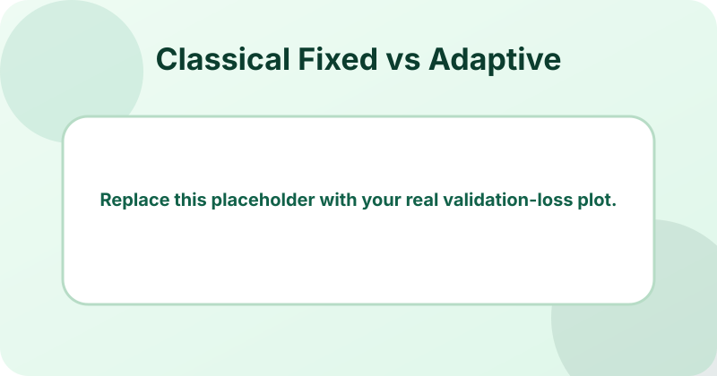
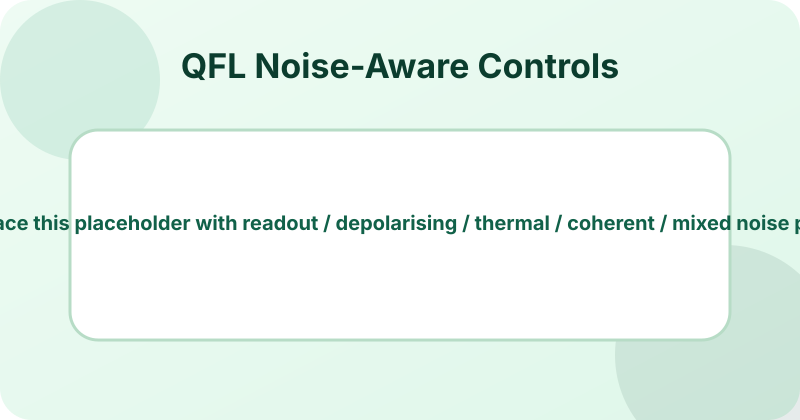
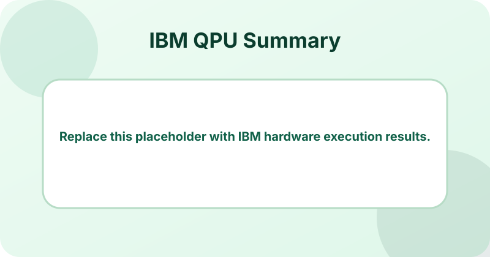
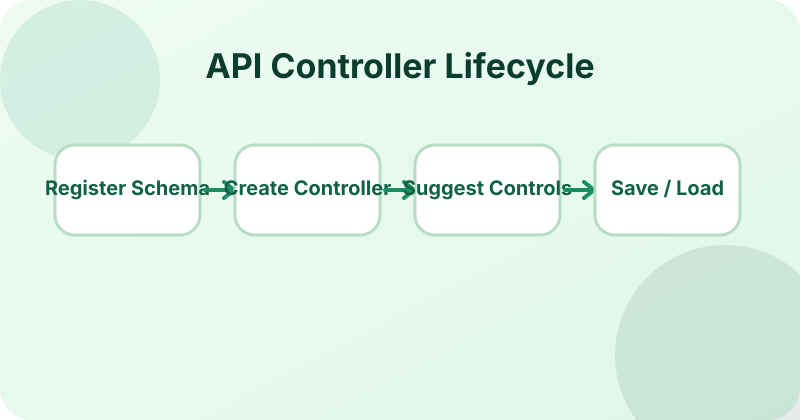
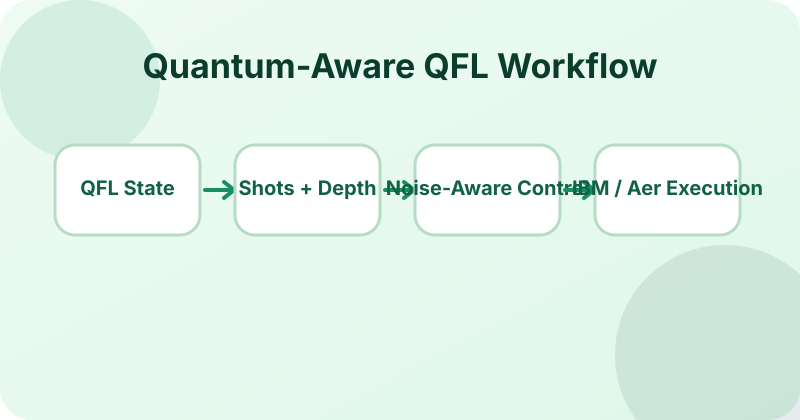
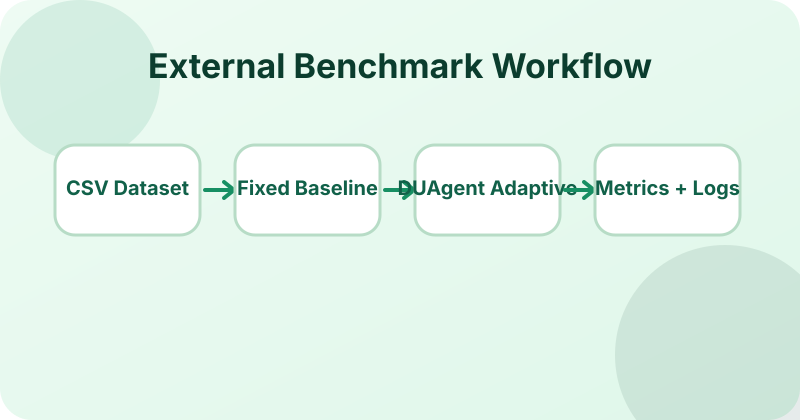

Open-source research platform · Classical FL · QFL · Hybrid adaptive control
DeepUnfolding-Agent: Strategy-Agnostic Deep-Unfolded Adaptive Control
A reusable FastAPI software platform that exposes deep-unfolded controllers through stable APIs for classical, quantum, and hybrid optimisation workflows.
Latest News
- Project website updated with DUAgent architecture, benchmark results, plots, and contributor descriptions.
- DeepUnfolding-Agent GitHub repository created for public research dissemination.
- External-user benchmark scripts prepared for classical FL, QFL, hybrid workflows, noisy simulation, and IBM QPU execution.
Abstract
Adaptive controllers for classical, quantum, and hybrid optimization workflows are often implemented as task-specific code coupled to a particular dataset, model, or training loop. This limits reproducibility, reuse, and comparison across learning strategies.
DeepUnfolding-Agent addresses this limitation by exposing deep-unfolded adaptive control through a schema-based FastAPI interface. External systems provide runtime diagnostic variables and receive bounded control variables, enabling reusable controller integration across federated learning, quantum federated learning, and hybrid optimisation settings.
Key Contributions
Replace or refine these statements to match the final paper contribution list.
Reusable deep-unfolded controller API
A strategy-agnostic FastAPI architecture separates strategy schemas, controller creation, control suggestion, update cycles, and persistence from dataset-specific training code.
Bounded agentic orchestration
The observe–decide–act–evaluate–update loop automates repeated controller use while enforcing schema-defined and user-defined safety bounds on control variables.
Classical, quantum, and hybrid workflows
The platform supports classical FL controls, QFL controls such as learning rate, shots, circuit depth, entanglement depth, and measurement reuse, and hybrid controller experiments.
System Pipeline
A website section for your main architecture, API loop, quantum workflow, and benchmark workflow figures.
DUAgent closed-loop workflow: external diagnostics, controller creation, bounded control suggestion, training or quantum execution, evaluation, and controller update.
1. Register strategy schema
Define ordered diagnostic state variables and bounded control variables for classical, quantum, or hybrid workflows.
2. Create controller
Create a reusable controller instance through the API and receive a controller identifier for later calls.
3. Suggest controls
Send runtime diagnostics and receive bounded control values such as learning rate, FedProx μ, local epochs, shots, and circuit depth.
4. Update and persist
Evaluate the resulting round, update the controller, and save metadata/checkpoints for reproducible reuse.
Main Results
Use this section for selected plots from your classical, QFL, noisy, and IBM QPU experiments.
Adaptive controls stabilise heterogeneous learning
Show validation loss, client performance, and fixed-versus-controller-adaptive comparisons across tabular, genomic, clinical, and trajectory datasets.
Quantum-aware controls respond to noise and shot limits
Include plots for readout, depolarising, thermal, coherent, and mixed-noise cases.
Hardware execution validates practical integration
Add real IBM quantum platform results showing trained QFL checkpoints and controller-generated quantum controls.



Figures and Resources
Place paper-ready diagrams, result plots, and screenshots here. Keep each caption short and readable.



People and Contributions
Edit these cards with final names, affiliations, and contribution descriptions before publication.
SN
Shanika Iroshi Nanayakkara
Lead researcher and developer
Conceptualized DUAgent, implemented the FastAPI controller platform, designed benchmark workflows, and prepared experiments, figures, documentation, and project website content.
SH
Shiva Raj Pokhrel
Supervisor / research guidance
Provided research supervision, technical feedback, manuscript review, and academic guidance. Replace this text with the exact contribution statement.
Citation
If you use DeepUnfolding-Agent in research, please cite the associated paper and software repository.
@software{duagent2026,
title = {DeepUnfolding-Agent: A Strategy-Agnostic API for Deep-Unfolded Adaptive Control},
author = {Nanayakkara, Shanika Iroshi, Shiva Raj Pokhrel},
year = {2026},
url = {https://github.com/shanikairoshi/DeepUnfolding-Agent}
}